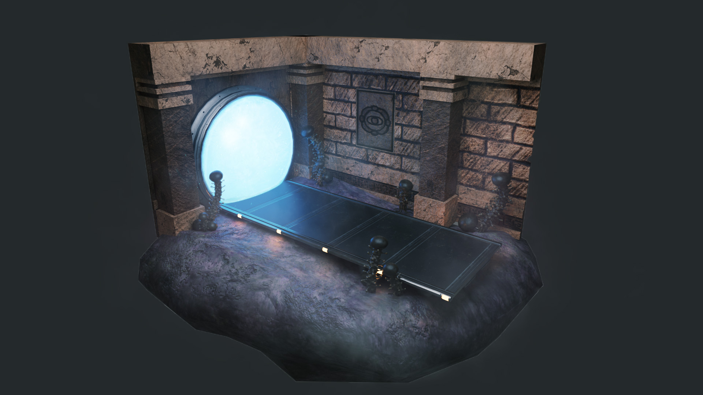
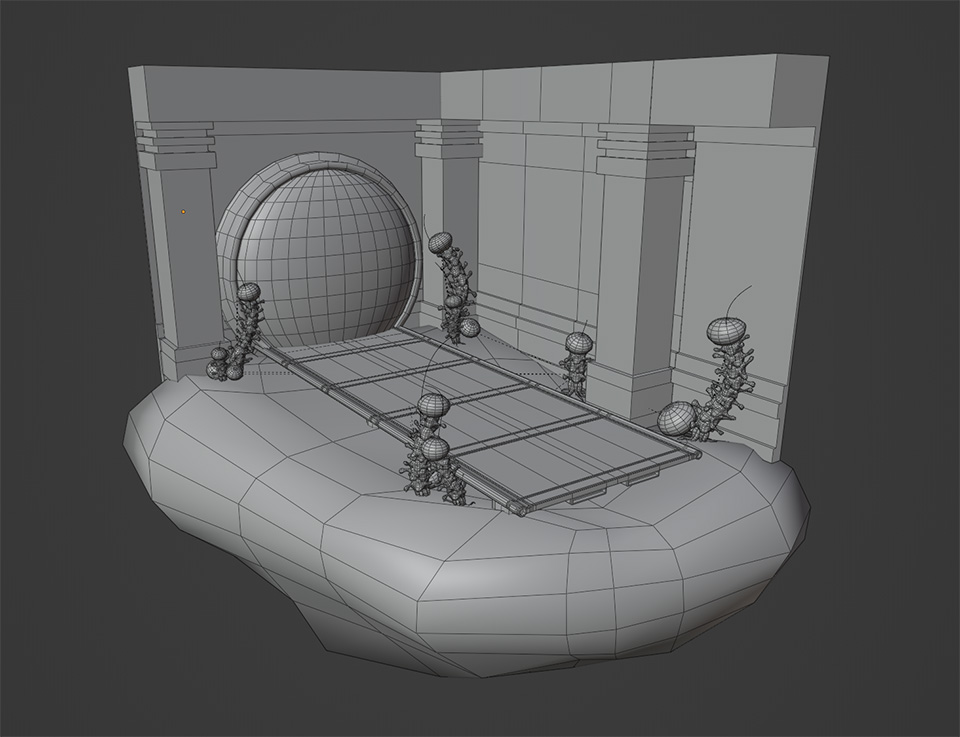
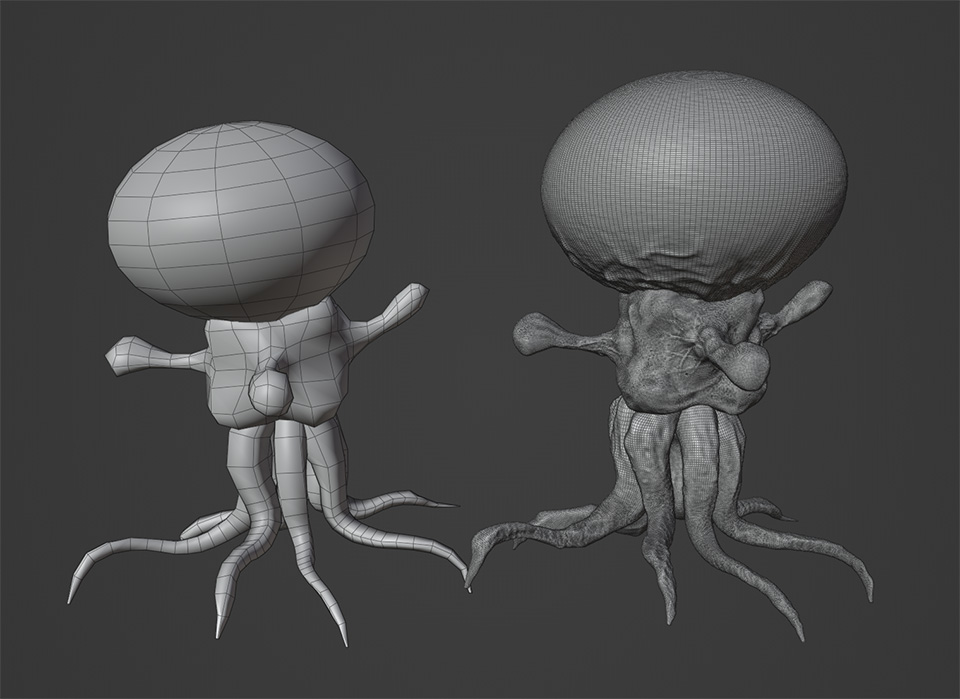

Miniature
Blender
Substance 3D Painter
Substance 3D Designer
Practice where I created a Metroid inspired miniature scene in Blender. I learned more about
Blender and Adobe Substance 3D Painter and Designer texture workflows. These were created to be like
game assets that are low-poly and modular.
Walls and pillars shared the same trim sheet texture. Mushroom normal maps were baked in Adobe Substance
3D Painter from a high-poly sculpt. It was created from 3 parts from which multiple variations could be easily created.


